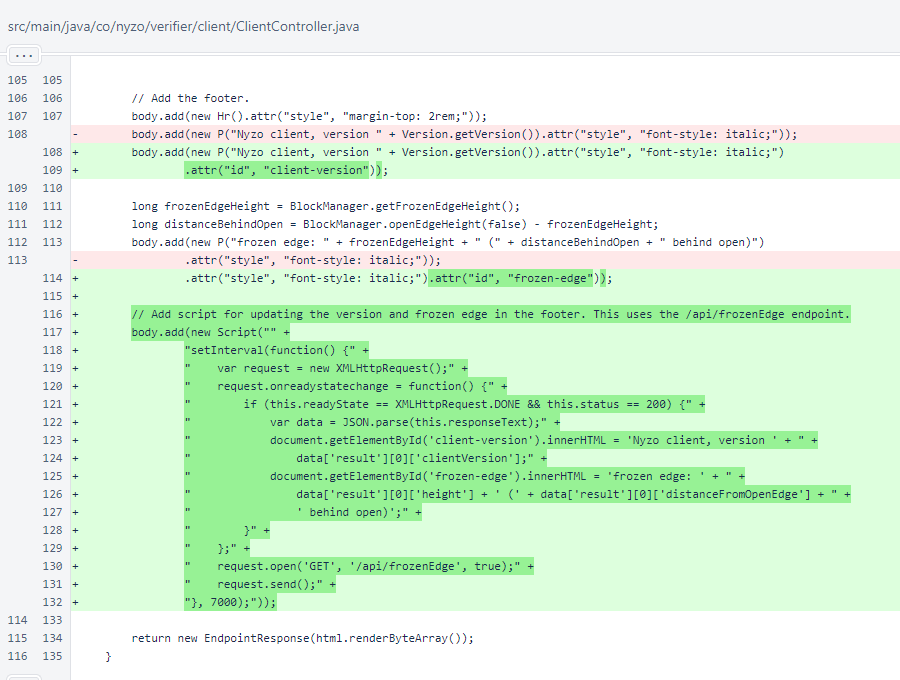
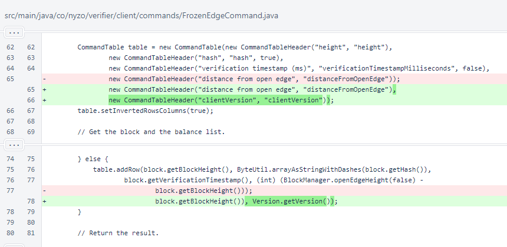

Nyzo version 616 (commit on GitHub) adds a dynamic update of the frozen edge to the root client web view.
This version affects the client only.
This is a small change that was made in the course of larger client updates. It is being released now to allow the next release to be more focused.
In ClientController, a small script was added to the page() method to update the frozen edge and client version using the /api/frozenEdge endpoint. The value is updated every 7 seconds.
To support the new homepage update, clientVersion was added to the FrozenEdgeCommand.
